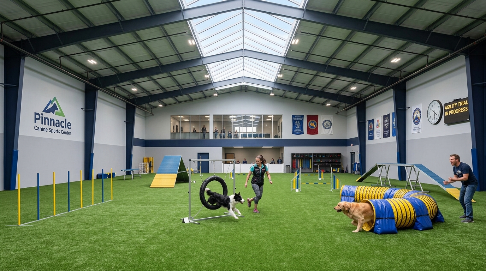

5.000 mq pensati su misura per il benessere canino
Uno spazio progettato secondo i massimi standard di sicurezza, igiene e comfort a Padova Ovest.
Doppia Recinzione di Sicurezza
Tutti i campi dispongono di bussola d'ingresso a doppia porta e reti alte 2 metri con zoccolo antiscavo, per lavorare in totale libertà e serenità.
Area Coperta per Maltempo
Grazie alla nostra struttura tensostatica coperta, le lezioni e le puppy class possono svolgersi regolarmente anche in caso di forte pioggia o maltempo.
Ombreggiatura Naturale & Acqua Fresca
Alberi ad alto fusto, vaschette per rinfrescarsi nei mesi caldi estivi e punti acqua potabile costantemente accessibili su tutti i campi.

I Nostri Campi all'Aperto • 5.000 mq
Alle pendici dei Colli Euganei, a soli 5 minuti dalle uscite tangenziale di Padova Ovest. Campi recintati a norma ENCI con doppia bussola di sicurezza, erba naturale ben curata e percorsi olfattivi protetti.

Tensostruttura Coperta • Attività Tutto l'Anno
Per garantire continuità didattica anche in caso di forte pioggia, vento o caldo estivo. Fondo ammortizzante ideale per le articolazioni dei cani e illuminazione LED ad alta efficienza per sessioni serali.